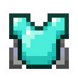
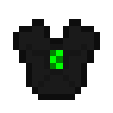
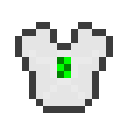

资源包与外观
资源包提供主题盔甲、添翼胸甲、帽子和武器皮肤的纹理与模型，可供原版客户端加载。
加载外观
客户端安装同版模组后自动加载内置外观。原版客户端接受服务器提供的资源包后，也能显示物品模型与纹理。道具规则由服务器提供。
- 已安装客户端模组：使用与服务器一致的版本进入游戏。
- 原版客户端：连接服务器时接受外观资源包。
- 服务器使用合并资源包时，由管理员把本模组素材加入统一的分发包。
导出与分发
- 服务器启动后，在
<世界>/contribution/resource-packs/找到当前版本的外观压缩包。 - 把压缩包放到可供客户端下载的资源包地址；已有其他资源包时先合并。
- 在
server.properties配置resource-pack与resource-pack-sha1，重启服务器后检查客户端接收结果。
同版本导出文件保留，更新版本时生成新文件。require-resource-pack=false 允许玩家拒绝资源包后继续进入服务器。
构建产物位置
构建输出 code/build/libs/CSU-YSU-items-<版本>-resource-pack.zip，同一包也内嵌于模组。
包含的纹理



- 主题盔甲、添翼胸甲及帽子的物品和装备外观。
- 六类武器皮肤的手持、物品栏及展示模型。
- 胸甲染色、纹饰和翼装图层。
- 「更多乐趣」进度背景和界面图标。
资源来源与装备图层
主题装甲采用项目提供的纹理，成人装甲纹理复用到婴儿装备层。翅膀纹饰层使用透明纹理，胸甲保留纹饰。完整素材来源见 code/THIRD_PARTY_NOTICES.md。
补充资料
本地开发工作流
run-gradle.ps1 build 成功后会自动备份并替换两处模组文件，以及指定客户端 resourcepacks 中本模组的旧压缩包；客户端在资源包选项中选择新版本压缩包后显示更新后的外观。